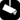

Text layer (with icons, see below)
The map show surveillance camera location in the world according to OpenStreetMap data.
The map was limited to the boundary covering France (performance with OpenLayers text layer).
 |
Surveillance-camera (no other specification) |
| Surveillance-camera indoor (inside a private place : shop, bank...) | |
| Surveillance-camera outdoor (outdoor but in a private location) | |
| Surveillance-camera public (outdoor in a public place) |
How the map is made (except for XAPI version which extract data from OSM on-line) :
Support OSM project : add the surveillance-camera existing in your town.
made by Pierre-Alain Dorange, data are licence under CC-BY-SA (see OpenStreetMap Licence)
source code (python script + html/javascript) : surveillance (BSD licence)